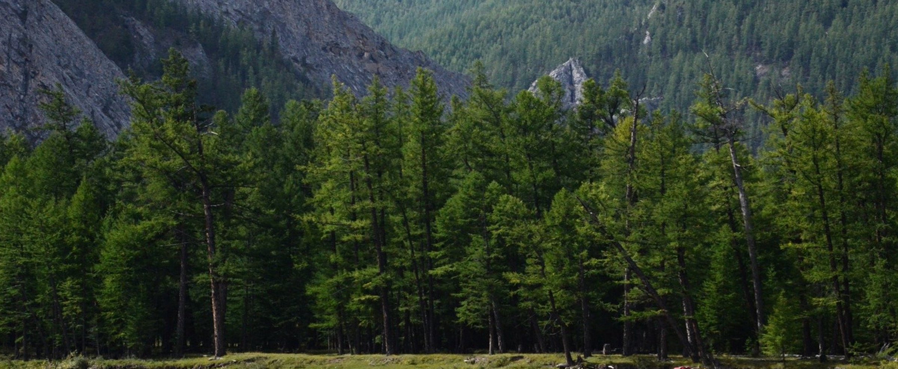
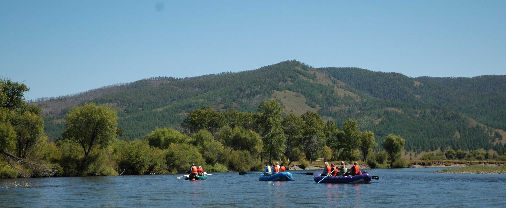

I · Khuvsgul, Northern Mongolia
Delgermurun
The summer river — June to August
Clear, fast water out of the northern mountains, through larch forest and a deep rock canyon. Long light, cool nights and the classic taimen float.
- Region
- Khuvsgul, northern Mongolia
- Getting there
- Flight to Murun, then overland
- Fish
- Taimen · lenok · grayling



II · Khentii, Eastern Mongolia
Onon
The autumn river — September and October
A broad, wild river of the Amur basin, fished when the larch turns gold and taimen feed hard before winter. Remote water, reached by charter flight.
- Region
- Khentii, eastern Mongolia
- Getting there
- Charter flight from Ulaanbaatar
- Fish
- Taimen · Amur trout · lenok · Amur pike · asp



SIDE BY SIDE
Compare the rivers
Both rivers are floated the same way — the difference is season, water and fish.
| RIVER | Delgermurun | Onon |
|---|---|---|
| Season | June – August | September – October |
| Region | Khuvsgul, northern Mongolia | Khentii, eastern Mongolia |
| Getting there | Flight to Murun, then overland | Charter flight from Ulaanbaatar |
| The water | Clear, fast canyon river through larch forest | Broad, wild autumn river in the Amur basin |
| Fish | Taimen, lenok, grayling | Taimen, Amur trout, lenok, Amur pike, asp |
| Trips | Classic Canyons · Headwaters Expedition | Upper River · Lower River · Buryat Headwaters |
| Trip length | 10–13 days | 9–11 days |
| Camps | Riverside ger camps; wilderness tents on Headwaters | Ger camps, tent-tipis and wilderness tents |
| Effort | Comfort to Expedition | Comfort to Demanding |
| Combine | Classic Canyons + Headwaters | Buryat → Upper → Lower, 20+ days |
ON BOTH RIVERS
One way of fishing
Whichever river you choose, the trip runs the same way.
No shuttles — new water every day
We float downstream each day, so you fish water nobody fished the day before.
Camp moves ahead of you
The crew packs up after you push off and has camp set downstream before you arrive.
Catch and release only
Every fish goes back to the river — taimen, lenok, grayling and the rest.
Single barbless hooks, rubber nets
Gentle gear, and fish stay in the water, so they swim away strong.
Every fish measured and logged
Catch records are shared with researchers to help protect these rivers.
Two anglers per guide
Small groups, with a guide for every two anglers on every trip.

Not sure which river?
Tell us when you can travel — summer or autumn — and how you like to fish. Our team will suggest the river and trip that fit, with availability and pricing.
Prices on request · Small groups of 2–8 anglers · Since 2004